Señalización
TIPOS DE SENDEROS
GR® - Gran Recorrido:
El color de referencia es el rojo. Sendero de más de 50 km. que se desarrolla en dos o más partes. Puede tener asociados enlaces, derivaciones y variantes. Su rotulación son las letras mayúsculas GR y un número correspondiente a una serie nacional.
PR® - Pequeño Recorrido:
El color de referencia es el amarillo. Senderos de menos de 50 km. que se puede recorrer en menos de una jornada. Puede tener asociadas variantes y derivaciones. Su rotulación son las letras mayúsculas PR seguidas de un guión que las separa de un código de letras que marca un código territorial (en unos territorios, por decisión de la federación autnómica, éste es provincial y en otras es autonómico); en otras se puede encontrar un espacio en el que aparece un número correspondiente a una serie autonómica y/o territorial.
SL® - Sendero Local:
El color de referencia es el verde. Sendero de menos de 10 Km. Su rotulación son las letras mayúsculas SL seguidas de un guión que las separa de un código de letras que señala un código territorial (bien puede ser autonómico, provincial, comarcal o municipal, según decisión de la federación autonómica); tras un espacio aparece un número correspondiente a una serie autonómica y/o territorial.
SEÑALES
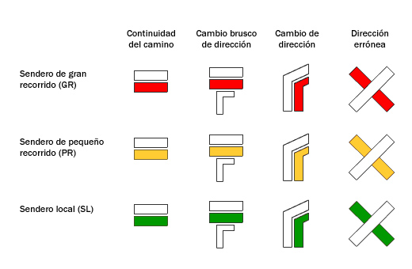Debido a que nuestros senderos no están homologados todos ellos, sus colores varían y se pueden encontrar diferentes señalizaciones como,
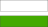
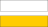
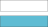
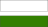
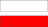
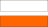
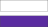
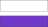
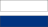
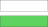